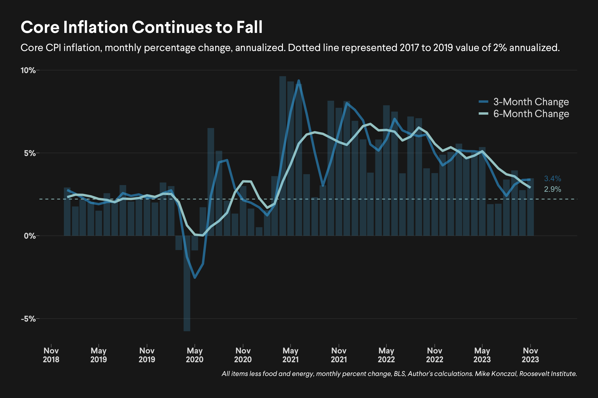
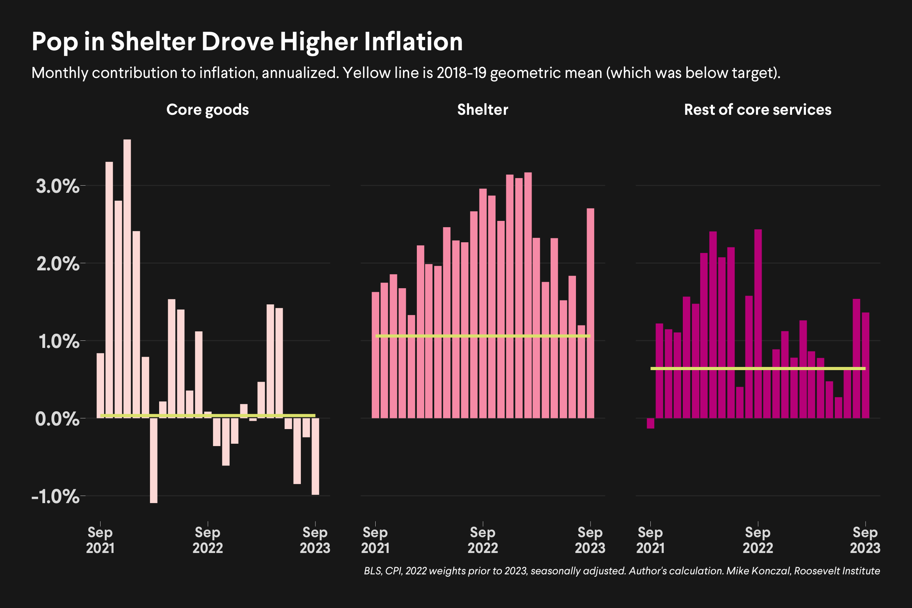
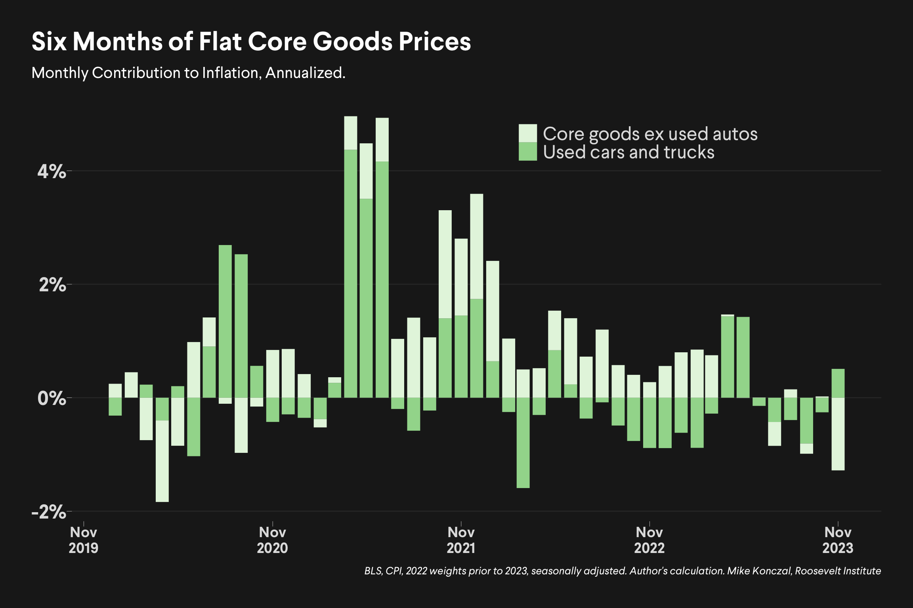
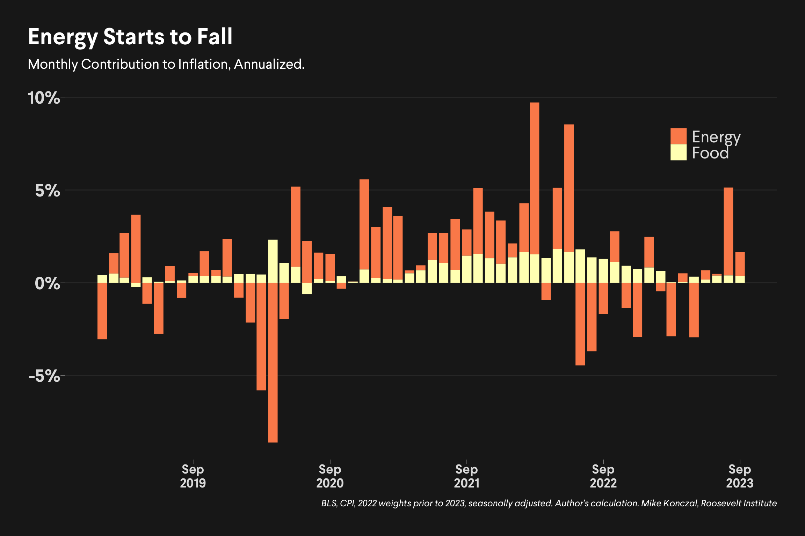
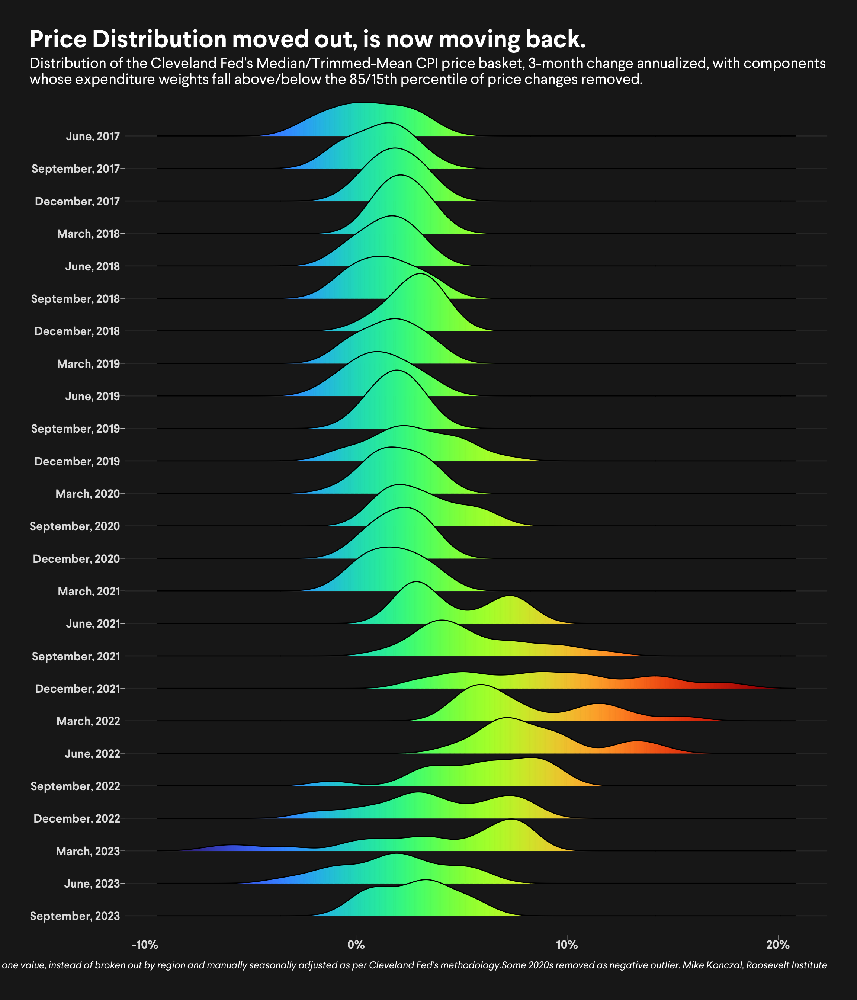
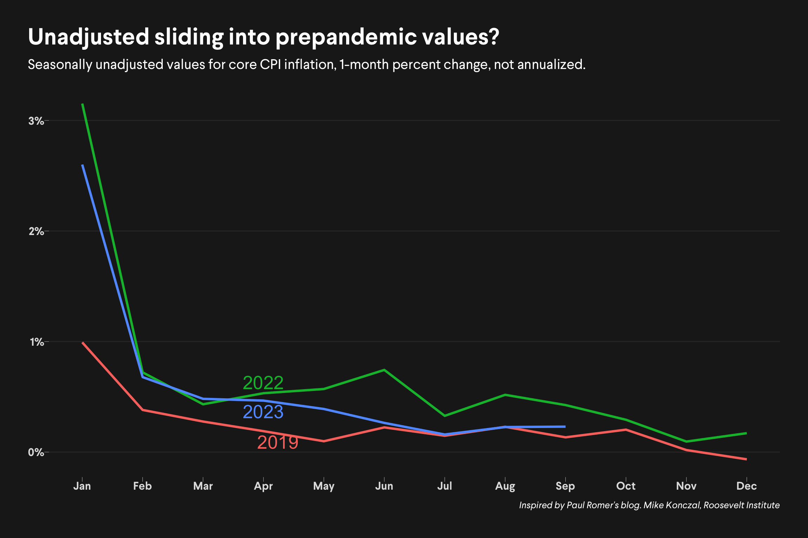

CPI Inflation
CPI Inflation report for September, 2023
Generated: October 23, 2023.
BLUF: About what people are expecting, higher shelter but negative goods, both likely to revert. I think we can say that the rate of deceleration is decelerating, but as shelter continues to slow (as rental units in particular come online) there’s a very clear path in these numbers to the full soft landing.
(Code to download BLS flat files and generate these graphics is here.)

Overall core inflation continues to fall in 2023. The levels during June and July were actually at prepandemic levels, which themselves were below trend. Some reversal was expected; recent inflation is somewhere between 3.1 and 3.6 percent, whether it’s the 3 or 6 month average.

The Fed watches three elements - core goods, housing, and the rest of services. It does this assuming core goods inflation was transitory, and, after shocking numbers in 2021-2022, would eventually return to a trend near zero. It also notes housing is measured with a lag, but that, in their minds, the rest of services is more labor and wage intensive and could be more persistent.
This month saw a pop in housing that is unlikely to be continued, especially as more rental units come online.

We now have six months now of core goods inflation excluding volatile used car prices back at zero. That part of inflation appears to be over.

Looking beyond that, we can see how PCE (one the Fed uses) and CPI are going to diverge - medical care drove an big part of number, but that is measured differently (and better) for PCE.
Overall remains steady, if a little hot.

The big energy run-up we saw last month is decelerating. Bodes well for keeping supply-shocks low.

The density plot of a cross section of price changes looks really good. Very close to pre-pandemic levels.
This change isn’t being driven by outliers or where categorization - the actual distribution of price changes is reverting back, even while the economy grows.

New thing I’m watching, inspired by Paul Romer’s blog: monthly evolution of seasonally unadjusted core inflation across the year.
Price increases are generally biggest in January. In 2022 they stayed elevated across the year; 2023 is converging back to 2019 levels. That’s a good developement.